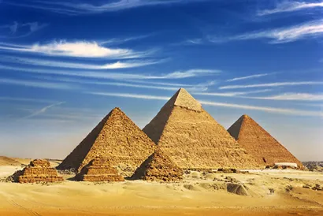
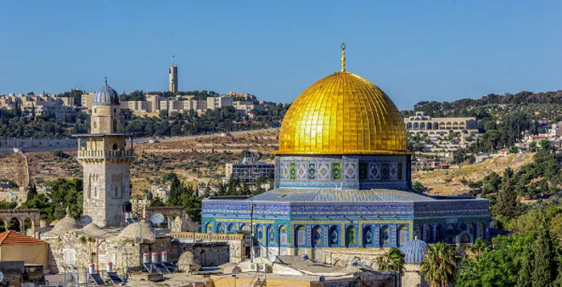
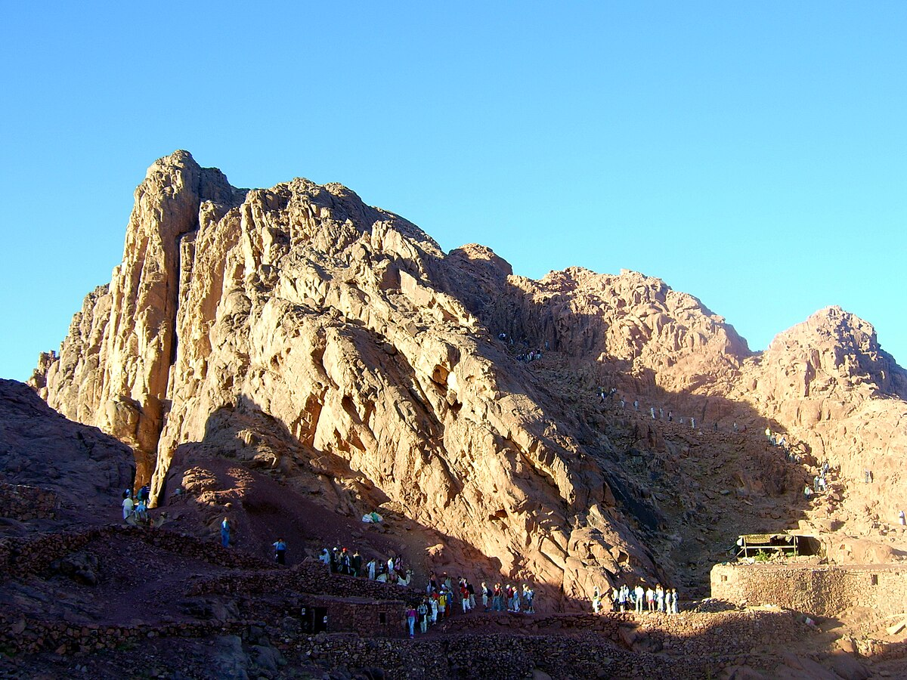
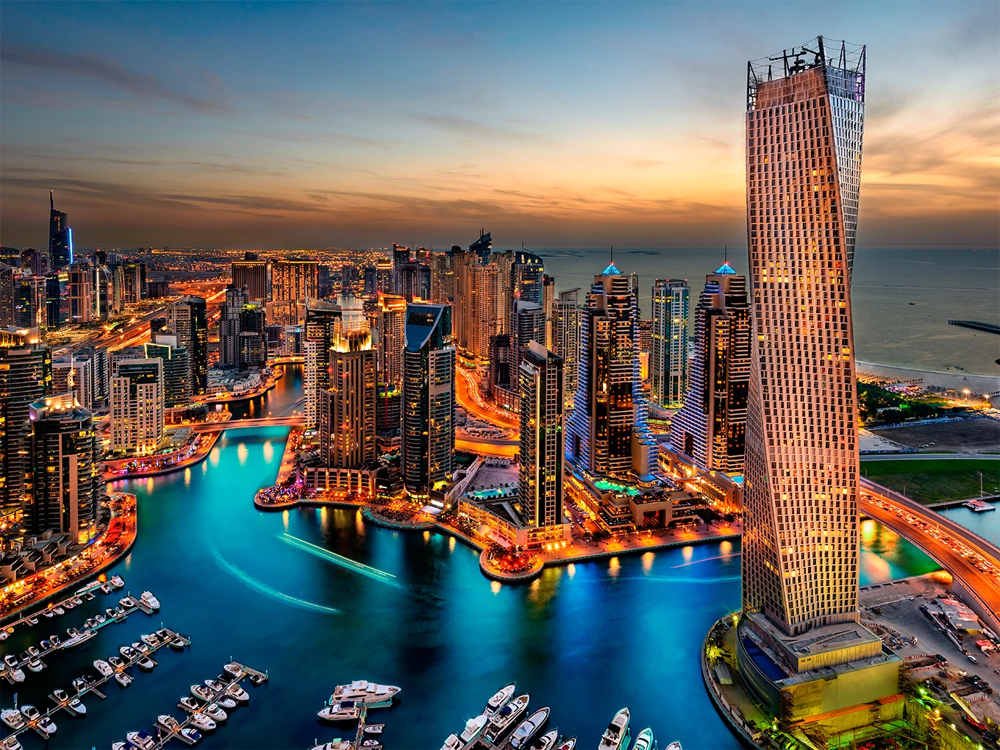
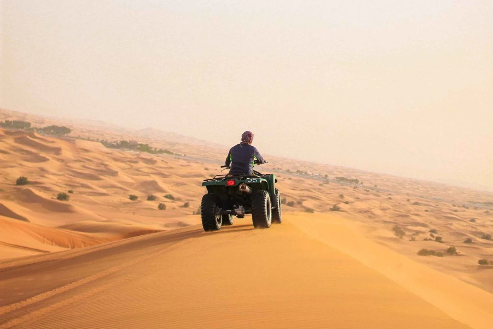
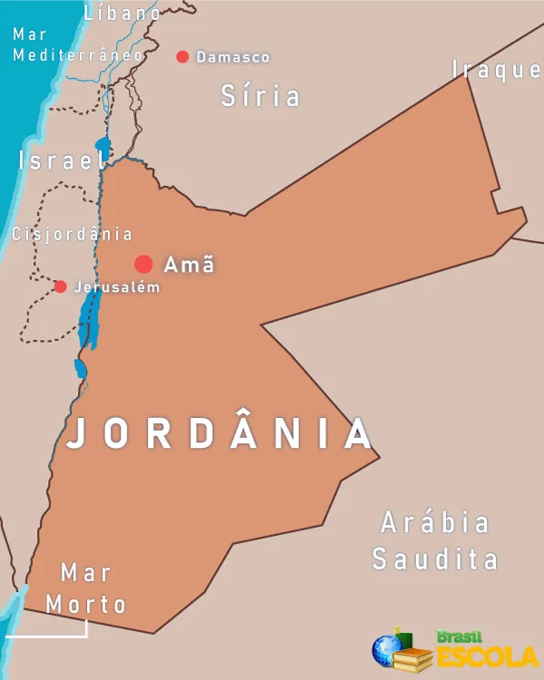
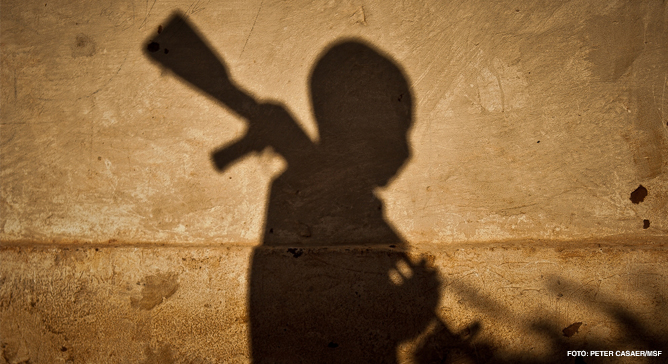
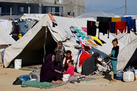
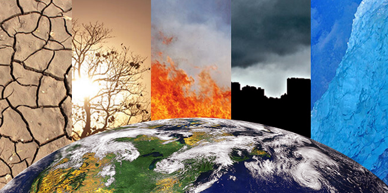

Atrações Históricas e Culturais
• Locais Históricos:O Oriente Médio abriga muitos sítios arqueológicos e históricos,
como as Pirâmides do Egito, Petra na Jordânia, e as ruínas de Babilônia no Iraque.

• Cidades Antigas:Cidades como Jerusalém, Damasco e Beirute são ricas em patrimônio
cultural e religioso, atraindo turistas em busca de experiências espirituais e históricas.

2. Turismo Religioso
• Religiões Abrahâmicas:O Oriente Médio é o berço de religiões como o judaísmo,
cristianismo e islamismo, com locais sagrados como Meca, Medina e o Monte Sinai
atraindo milhões de peregrinos anualmente.

3. Desenvolvimento Moderno
• Cidades Futuristas:Cidades como Dubai e Abu Dhabi são conhecidas por seus arranhacéus
icônicos, shopping centers luxuosos e eventos internacionais, atraindo turistas
que buscam modernidade e entretenimento.

• Eventos e Festivais:O Oriente Médio sedia uma variedade de eventos culturais, como
o Festival de Cinema de Dubai e o Festival de Música do Cairo, promovendo a
diversidade cultural.
4. Turismo de Aventura e Natureza
• Atividades ao Ar Livre:A região oferece oportunidades para turismo de aventura,
como caminhadas nas montanhas da Jordânia, safáris no deserto da Arábia Saudita e
mergulho em recifes de corais no Mar Vermelho.

5. Desafios e Oportunidades
• Conflitos e Instabilidade:Conflitos em algumas áreas, como Síria e Iraque, têm um
impacto negativo no turismo, mas países como Omã e Jordânia têm se esforçado para
promover um turismo seguro e estável.
• Diversificação Econômica:Muitos países estão investindo em turismo como parte de
suas estratégias de diversificação econômica, reduzindo a dependência do petróleo.

6. Turismo Sustentável
• Iniciativas Sustentáveis:: Há um crescente foco em práticas de turismo sustentável,
promovendo a preservação ambiental e o desenvolvimento econômico local,
especialmente em áreas vulneráveis.
A migração e a situação dos refugiados no Oriente Médio são questões críticas, marcadas por
complexidade e profundidade. Aqui estão os principais aspectos:
1. Causas da Migração
• Conflitos Armados:Guerras e instabilidades, como as ocorridas na Síria, Iraque e
Iémen, forçaram milhões a deixar suas casas em busca de segurança.
• Condições Econômicas:: A busca por melhores oportunidades de vida e emprego
também impulsiona a migração, especialmente entre jovens.

2. Refugiados
• Crisis dos Refugiados Sírios: Desde o início da guerra civil em 2011, mais de 6 milhões
de sírios se tornaram refugiados, principalmente na Turquia, Líbano e Jordânia.
• Refugiados Palestinos:: A questão palestina resultou em milhões de refugiados que
vivem em campos em países vizinhos, como Líbano e Jordânia, e muitos enfrentam
dificuldades de integração.

3. Deslocamento Interno
• Deslocados Internos:Além dos refugiados, há milhões de deslocados internos,
especialmente na Síria e no Iraque, que ainda vivem em suas terras, mas foram
forçados a fugir de suas casas devido à violência.
4. Resposta Internacional
• Ajuda Humanitária:Organizações internacionais e ONGs têm trabalhado para fornecer
assistência humanitária, mas a ajuda muitas vezes é insuficiente em face das
crescentes necessidades.
• Políticas de Acolhimento:Os países anfitriões enfrentam desafios em acolher grandes
populações de refugiados, o que pode levar a tensões sociais e econômicas.
5. Impacto nas Comunidades Locais
• Pressões Sociais:A chegada de refugiados pode sobrecarregar serviços públicos, como
saúde e educação, criando tensões com as comunidades locais.
• Contribuições Culturais:Apesar dos desafios, os refugiados também trazem
contribuições culturais e econômicas, enriquecendo as sociedades anfitriãs.
6. Migração Forçada e Clima
• Mudanças Climáticas:Fatores ambientais, como escassez de água e desertificação,
estão começando a forçar a migração e podem se tornar uma causa maior de
deslocamento no futuro

7. Futuro da Migração
• Soluções Sustentáveis:A busca por soluções duradouras e sustentáveis para a
migração e a situação dos refugiados é essencial, incluindo processos de paz e
reconstrução nas áreas afetadas.
VOLTAR